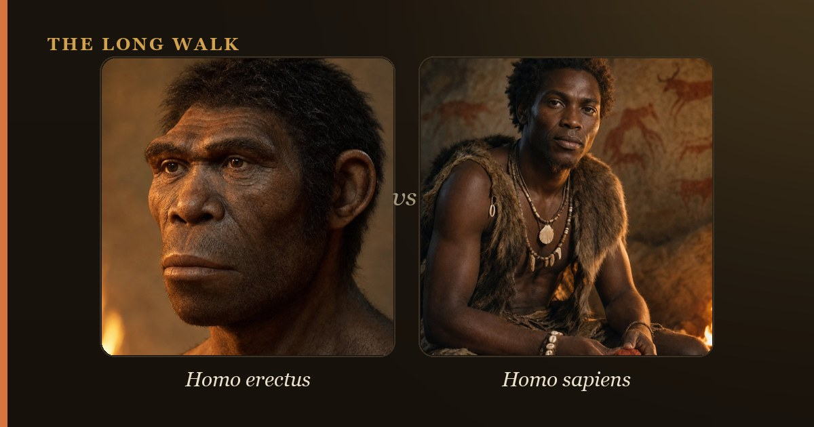

Homo erectus vs Homo sapiens compares the longest-lived human species with the youngest. Homo erectus appeared about 1.9 million years ago, was the first hominin with a modern-looking body and the first to leave Africa, and survived in Java until about 110,000 years ago. Homo sapiens appeared in Africa about 300,000 years ago. Below the neck they were similar. The main differences were brain size and shape, a slower childhood in our species and much faster cultural change. African erectus was probably among our ancestors.

Between 1931 and 1933, survey teams digging on a terrace above the Solo River at Ngandong, Java, recovered a dozen skull caps and two shin bones. They were Homo erectus, and in 2020 a study led by Yan Rizal and Kira Westaway dated them to between 117,000 and 108,000 years ago. By then, Homo sapiens had lived in Africa for about 200,000 years.
So the Homo erectus vs Homo sapiens comparison is not between an ancestor and its replacement. For a long stretch, both species existed at once, at opposite ends of the Old World. One had already lasted well over a million years. The other was just getting started.
Homo erectus vs Homo sapiens on the clock
| Measure | Homo erectus | Homo sapiens |
|---|---|---|
| Known span | ~1.9 million to ~110,000 years ago | ~300,000 years ago to today |
| Range | Africa, western Asia, China, Java | Africa, then every continent |
| Brain | ~550–1,250 cc, rising over time | ~1,350 cc average, globular |
| Skull | Long, low, thick, heavy brow, no chin | High, rounded, small brow, chin |
| Childhood | Faster growth, shorter childhood | Long childhood, adolescent growth spurt |
| Tools | Oldowan, then Acheulean handaxes | Middle Stone Age, then rapidly changing kits |
A species that lasts 1.8 million years is a success by any measure. Erectus survived dozens of glacial cycles and spread from southern Africa to northern China. Our species has existed for about a sixth of that time, so it is too early to say whether we will match its run. What we did instead was spread everywhere, including Australia and the Americas, and change our way of life faster than any species before.
One species or several?
A species that covers that much time and space is bound to vary, and researchers disagree about how to divide it. Early African fossils, such as KNM-ER 3733 and the Nariokotome boy, are often called Homo ergaster, a name proposed in 1975. Under that scheme, ergaster is the African ancestor, and erectus is the Asian branch that grew thicker skulls and eventually died out.
The Dmanisi fossils from Georgia, about 1.8 million years old, complicate this. Five skulls from one site and one moment vary as much as fossils from across Africa that had been given different names. In 2013, David Lordkipanidze and colleagues argued that this means early Homo was one variable lineage. Many researchers disagree, and the “lumping” argument is still open. On this site we use Homo erectus in the broad sense.
Same body, different childhood
From the neck down, erectus looked like us: long legs, short arms and narrow hips. Dennis Bramble and Daniel Lieberman argued in 2004 that features such as the springy foot arch, the large gluteal muscles and a ligament that steadies the head show that early Homo was built for endurance running. That idea is popular but debated, because many of the same features also help with long-distance walking.
The bigger difference is in growth. In 2001, Christopher Dean and colleagues counted daily growth lines in fossil tooth enamel and found that erectus teeth formed faster than ours. The Nariokotome boy from Kenya, about 1.5 million years old, is now thought to have died at about 8 or 9 years old, yet he was already about 1.6 metres tall. A faster schedule like his means a shorter childhood. Modern humans spend years longer as dependent learners, and that extra time may be what made our cultural learning possible.
Brains grew within erectus too
Brain size did not stand still for 1.8 million years. The smallest Dmanisi skull held about 546 cc. Late Javanese skulls from Ngandong reached about 1,250 cc, within the lower part of the modern range.
Size alone does not separate the species. Simon Neubauer and colleagues showed in 2018 that our braincase only became fully rounded between about 100,000 and 35,000 years ago, long after Homo sapiens first appeared. The shape change, which reflects how the brain grows and is organised, may matter more than the extra volume.
What erectus could do
- Handaxes. The earliest Acheulean handaxes come from Kokiselei in Kenya, about 1.76 million years ago. Variations on the design were made for more than a million years.
- Fire. Burned bone and plant ash inside Wonderwerk Cave, South Africa, about 1 million years old, are the strongest early evidence. At Gesher Benot Ya’aqov in Israel, about 780,000 years ago, hearths were made repeatedly. See our article on when humans controlled fire.
- Marks. A freshwater mussel shell from Trinil, Java, 540,000 to 430,000 years old, carries an engraved zigzag. Whether it was meant to mean anything is contested.
- Water crossings. Stone tools on Flores are about a million years old, and Flores has never been joined to the mainland. Some hominin crossed the sea; erectus is the likeliest candidate, but no fossil confirms it. See Homo floresiensis vs Homo erectus.
What is missing is change. Erectus technology shifted over hundreds of thousands of years. Modern human toolkits after about 70,000 years ago change from region to region and century to century. That pace, not any single invention, is the clearest behavioural gap between the species.
Peking Man and the lost fossils
Some of the most important Homo erectus fossils no longer exist. Excavations at Zhoukoudian, near Beijing, began in the 1920s. In 1927 Davidson Black named a new species, Sinanthropus pekinensis, from a single molar, and in 1929 Pei Wenzhong found the first skullcap. By the late 1930s the cave had yielded remains of more than 40 individuals. In 1941, as war spread across China, the fossils were packed for shipment to safety and vanished. They have never been found. Science still has them only because Franz Weidenreich had made detailed casts and descriptions.
Weidenreich used the fossils to argue that modern East Asians descended partly from local erectus, an early form of the multiregional model. Genetic evidence now shows that people in East Asia today descend mainly from Homo sapiens who left Africa within the last 100,000 years or so. Dating published in 2009 put the lower Zhoukoudian layers at around 770,000 years old, far older than any sapiens fossil.
Was Homo erectus our ancestor?
Most researchers think African erectus gave rise to the large-brained populations of the Middle Pleistocene, often grouped as Homo heidelbergensis, and that one African branch of those led to Homo sapiens, while Eurasian branches led to Neanderthals and Denisovans. The Asian erectus populations of Java and China were probably side branches. See Homo heidelbergensis vs Neanderthals for the next step.
No erectus DNA has been recovered. But genome studies of Denisovans detect traces of an older “super-archaic” population that split from our lineage perhaps two million years ago. Whether that population was a form of erectus is unknown.
Why they probably never met
Modern humans were in Sumatra by about 73,000 to 63,000 years ago, according to teeth from Lida Ajer cave. The Ngandong erectus were gone by about 108,000 years ago. On current dates, the two species missed each other in Java by tens of thousands of years. A later survival somewhere else in Asia cannot be ruled out, but there is no evidence of it.
Follow the line from Homo erectus through heidelbergensis to modern humans on the interactive family tree, and see where each species sits.
Explore the family tree →Homo erectus vs Homo sapiens FAQ
How long did Homo erectus survive compared with Homo sapiens?
Homo erectus lasted from about 1.9 million to about 110,000 years ago, roughly 1.8 million years. Homo sapiens has existed for about 300,000 years.
Did Homo erectus and Homo sapiens live at the same time?
Yes. Late Homo erectus at Ngandong, Java, dates to 117,000 to 108,000 years ago, when Homo sapiens already lived in Africa. There is no evidence the two met.
What is the difference between Homo erectus and Homo ergaster?
Homo ergaster is a name some researchers use for early African Homo erectus, such as the Nariokotome boy. Others treat both as one species, Homo erectus in the broad sense.
Was Homo erectus taller than modern humans?
Not on average. Homo erectus had modern body proportions, and some individuals were tall, but height varied widely; the Dmanisi people in Georgia were small.
Did Homo erectus use fire?
Probably, at least later in its history. The strongest early evidence is burned material in Wonderwerk Cave, South Africa, about one million years old.
- Rizal, Y. et al. (2020). 'Last appearance of Homo erectus at Ngandong, Java, 117,000–108,000 years ago.' Nature 577. nature.com
- Dean, C. et al. (2001). 'Growth processes in teeth distinguish modern humans from Homo erectus and earlier hominins.' Nature 414.
- Lordkipanidze, D. et al. (2013). 'A complete skull from Dmanisi, Georgia, and the evolutionary biology of early Homo.' Science 342. science.org
- Joordens, J. C. A. et al. (2015). 'Homo erectus at Trinil on Java used shells for tool production and engraving.' Nature 518. nature.com
- Neubauer, S., Hublin, J.-J. & Gunz, P. (2018). 'The evolution of modern human brain shape.' Science Advances 4. science.org